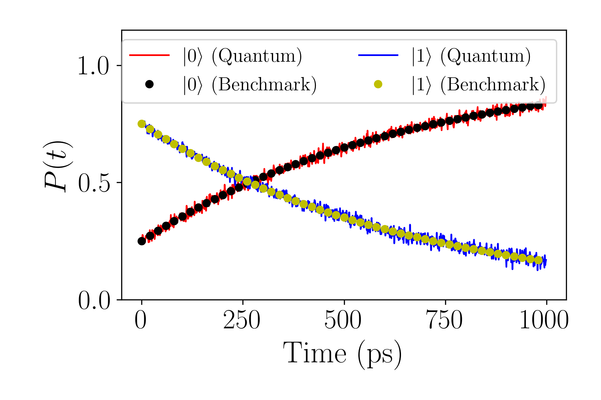

Spin 1/2 Demo
This section illustrates the simulation of an open quantum Spin-1/2 system using both classical and quantum backends, implemented within QFlux. Spin-1/2 models are chemically relevant, as they capture key features of charge and energy transfer between donor and acceptor sites, that is each spin state corresponds to an electronic state for the chemical interpretation. We examine two types of Lindblad equations for describing open system dyanmics. The Linblad equation is given as
The first is taking the jump operators \(L_j\) as just the sigle operator \(\sigma_x\), the system is subject to a type of decoherence which damps both the system energy and coherences. Demonstrating the Lindblad formalism can incorporate both population relaxation and dephasing (loss of coherence), which is tyical of chemical reactions in the condensed phase. If instead we take the jump operators \(L_j\) as just the single operator \(\sigma^+\), the system is subject to amplitude damping, a type of decoherence that affects only the populations. Modeling the irreversible decay from the excited to the ground state, while leaving the coherences intact. Although , we focus here on amplitude damping as one representative dissipation pathway. Simulation results from both classical and quantum methods are compared to validate the implementation.
Classical Simulation
We begin by setting up the classical evolution of a Spin-1/2 system governed by a simple Hamiltonian and subject to dissipation via a collapse operator, defined as \(\sqrt{\gamma_j}L_j\). The system's evolution is computed using both matrix exponentiation and QuTiP solvers for benchmarking. We begin by importing the necessary modules from QFlux, Numpy, and Matplotlib libraries
import qflux.open_systems.params as pa
from qflux.open_systems.numerical_methods import DynamicsOS
from qflux.open_systems.quantum_simulation import QubitDynamicsOS
import numpy as np
import matplotlib.pyplot as plt
The params file defines constants and quantum operators commonly used in simulations of spin-½ systems. These include the Pauli matrices as well as the raising and lowering operators.
The DynamicsOS class performs classical simulation of an open quantum system using the Lindblad master equation. If no collapse operators are specified, the model reduces to the quantum Liouville equation.
The table below outlines the required inputs to initialize a DynamicsOS instance:
DynamicsOS Initialization Inputs
| Attribute | Type | Description |
|---|---|---|
Nsys |
int |
Dimension of the system Hilbert space, \( N \) |
Hsys |
np.ndarray |
Hamiltonian of the system, shape \( (N, N) \) |
rho0 |
np.ndarray |
Initial density matrix, shape \( (N, N) \) |
c_ops |
List[np.ndarray] |
List of collapse operators, each of shape \( (N, N) \) |
Simulated System
The Hamiltonian is chosen to be proportional to the Pauli-X matrix:
The collapse operator introduces dephasing:
The initial state is the spin-up state along the \( z \)-axis:
Simulation is carried out using matrix exponential propagation of the Lindbladian. Results are compared against reference dynamics obtained using QuTiP. We produce the matrix exponential propagation employing the propagate_matrix_exp method then compare to results with QuTiP, which is implemented using propagate_qt. The following tables explain the input-output relationships to perform simulation with matrix exponential propagation and QuTiP with our QFlux methods
DynamicsOS.propagate_matrix_exp Input
| Input | Type | Description |
|---|---|---|
time_arr |
List[float] |
Time array for dynamic simulation |
observable |
np.ndarray |
Observable for which the expectation value is computed |
Is_store_state |
bool, optional |
If True, stores the density matrix at each time step (default: False) |
Is_show_step |
bool, optional |
If True, prints progress during simulation (default: False) |
Is_Gt |
bool, optional |
If True, includes propagators in the output (default: False) |
DynamicsOS.propagate_matrix_exp Output
| Return Object | Attribute | Type | Description |
|---|---|---|---|
Result |
expect |
List[float] |
Expectation values over time |
density_matrix |
List[np.ndarray] (optional) |
Time-evolved density matrices (if Is_store_state=True) |
|
Gprop |
List[np.ndarray] (optional) |
Propagators at each time step (if Is_Gt=True) |
Now we provide the information for QuTiP propagation
DynamicsOS.propagate_qt Parameters
| Parameter | Type | Description |
|---|---|---|
time_arr |
List[float] |
Time array for dynamic simulation |
observable |
Any |
Observable operator(s) for which the expectation value is computed. Can be a single operator or a list of operators. |
**kwargs |
Any, optional |
Additional keyword arguments passed directly to QuTiP’s mesolve function |
DynamicsOS.propagate_qt Output
| Return Object | Type | Description |
|---|---|---|
| — | List[float] |
Expectation values of the observable(s) over time |
The following code begins by defining the Hamiltonian, dissipation parameter, Lindbladian collapse operators, initial state of the density matrix, and time points we evolve along. It continues to initialize the closed and open system dynamics and solve the equations of motion with our QFlux methods
Hsys = 2 * np.pi * 0.1 * pa.X
gamma = 0.05
c_ops = np.sqrt(gamma)*pa.X
rho0 = np.outer(pa.spin_up, pa.spin_up.conj())
time_arr = np.linspace(0, (250 - 1) * 0.1, 250)
spin1_puresys = DynamicsOS(Nsys=2, Hsys=Hsys, rho0=rho0)
spin1_dissipative = DynamicsOS(Nsys=2, Hsys=Hsys, rho0=rho0, c_ops = [c_ops])
expec_vals_qutip_Liouv = spin1_puresys.propagate_qt(time_arr=time_arr, observable=pa.Z)
result_matrix_exp = spin1_dissipative.propagate_matrix_exp(time_arr=time_arr, observable=pa.Z)
expec_vals_qutip_Lindblad = spin1_dissipative.propagate_qt(time_arr=time_arr, observable=pa.Z)
We now compare the results obtained from matrix exponential evolution, QuTiP Lindblad dynamics, and the pure Liouville evolution. The close agreement validates the numerical implementation.
plt.figure(figsize=(6,2))
plt.plot(time_arr, result_matrix_exp.expect,'b-', label = "Matrix Exponential")
plt.plot(time_arr, expec_vals_qutip_Lindblad[0],'ko',markersize=4,markevery=4, label = "QuTiP_Lindblad")
plt.plot(time_arr, expec_vals_qutip_Liouv[0],'r-', label = "QuTiP_Liouville")
plt.xlabel('time',fontsize=15)
plt.ylabel('<$\sigma^z$>(t)',fontsize=15)
plt.legend(loc = 'upper right')
plt.show()

Quantum Simulation of the Spin-1/2 System: Amplitude-Channel Damping
We next examine the quantum simulation of amplitude damping, using a zero Hamiltonian:
The collapse operator is proportional to the spin-raising operator:
with the decay rate given by:
The system is initialized in a mixed state:
The following code defines the quantities shown above-the Hamiltonian, dissipation rate \(\gamma\), collapse operator, initial state, and continues to specify the array of time points.
Hsys = 0.0 * pa.I
gamma = 1.52e9*1E-12
c_ops = np.sqrt(gamma)*pa.sigmap
rho0_sdam = np.array([[1/4,1/4],[1/4,3/4]],dtype=np.complex128)
time_sdam = np.arange(0, 1000, 1)
In the following code, we instantiate the quantum simulation with QubitDynamicsOS, this class implements quantum dynamics simulation which can be non-unitary.
The QubitDynamicsOS class extends DynamicsOS and provides support for simulating quantum dynamics using either a density matrix or a Kraus operator representation. One can specify performing either a Kraus operator or density matrix simulation when instantiating QubitDynamicsOS. Either can accept a propagator obtained from a quantum master equation of the users choice by specifying Gprop or by calculating it using the Lindblad equation through DynamicsOS shown above. The class QubitDynamicsOS also provides structure for circuit-based simulation with Qiskit backends.
QubitDynamicsOS Initialization Parameters
| Parameter | Type | Description |
|---|---|---|
rep |
str, optional |
Representation type. Must be 'Density' or 'Kraus'. Defaults to 'Density'. |
**kwargs |
Any |
Additional keyword arguments passed to the base DynamicsOS initializer (e.g., Nsys, Hsys, rho0, c_ops) |
QubitDynamicsOS Attributes
| Attribute | Type | Description |
|---|---|---|
rep |
str |
The selected representation ('Density' or 'Kraus') |
count_str |
List[str], optional |
Qiskit-compatible list of bitstrings for measurement counts |
observable |
np.ndarray, optional |
Observable matrix used in measurement |
dilation_method |
str |
Method used for quantum dilation. Defaults to 'Sz-Nagy' |
It then specifies the Qubits which will be measured with QubitDynamicsOS.set_count_str, so counts will be obtained for those states specifed here. Finally, the dilation method is specified, the methods available are "Sz-Nagy", "SVD", and "SVD-Walsh". The following code shows how to instantiate a quantum simulation
spin1_sdam = QubitDynamicsOS(rep='Density', Nsys=2, Hsys=Hsys, rho0=rho0_sdam, c_ops = [c_ops])
spin1_sdam.set_count_str(['000','011'])
spin1_sdam.set_dilation_method('SVD')
The simulation is run using the quantum backend, and results are benchmarked against a classical matrix exponentiation method. There are two representations available for performing the quantum simulation, the first being quantum simulation using the vectorized density matrix which is done with the method QubitDynamicsOS.qc_simulation_vecdens and the second is with the Kraus operator representation, which we do not implement here but can be done so with QubitDynamics.qc_simulation_kraus. The inputs and outputs of QubitDynamicsOS.qc_simulation_vecdens are described by the tables below
QubitDynamicsOS.qc_simulation_vecdens Parameters
| Parameter | Type | Description |
|---|---|---|
time_arr |
List[float] |
List of time steps for the simulation |
shots |
int, optional |
Number of measurement shots to run per time step. Defaults to 1024 |
backend |
Any, optional |
Qiskit backend for simulation (e.g., AerSimulator). Defaults to AerSimulator() |
Gprop |
List[np.ndarray], optional |
List of propagator matrices for system evolution. If None, they will be calculated automatically |
**kwargs |
Any |
Additional keyword arguments passed to the propagator calculation routine |
QubitDynamicsOS.qc_simulation_vecdens Output
| Return Object | Type | Description |
|---|---|---|
| — | np.ndarray |
Array containing the quantum simulation results over time |
In the following code, the classical simulation of the same system is also computed using the propagate_matrix_exp method from DynamicsOS shown before
Pop_qc = spin1_sdam.qc_simulation_vecdens(time_sdam)
res_sdam_classical = spin1_sdam.propagate_matrix_exp(time_sdam, observable=pa.Z, Is_store_state = True)
Pop_Mexp = np.zeros_like(Pop_qc)
for i in range(len(time_sdam)):
Pop_Mexp[i,0] = res_sdam_classical.density_matrix[i][0,0].real
Pop_Mexp[i,1] = res_sdam_classical.density_matrix[i][1,1].real
The population dynamics of both the excited and ground states are plotted, showing excellent agreement:
plt.figure(figsize=(6,2))
plt.plot(time_sdam,Pop_qc[:,0],'r-',label="quantum,|0>")
plt.plot(time_sdam,Pop_Mexp[:,0],'ko',markersize=5,markevery=40,label="benchmark,|0>")
plt.plot(time_sdam,Pop_qc[:,1],'b-',label="quantum,|1>")
plt.plot(time_sdam,Pop_Mexp[:,1],'yo',markersize=5,markevery=40,label="benchmark,|1>")
plt.xlabel('time (ps)',fontsize=15)
plt.ylabel('$P(t)$',fontsize=15)
plt.legend(loc = 'upper right')

Summary
In this tutorial, we explored both classical and quantum simulations of a spin-½ (two-level) open quantum system using QFlux, with a focus on dissipative dynamics. The key objectives and takeaways include:
- Defining Hamiltonians and collapse operators within the Lindblad formalism to model open quantum systems.
- Implementing classical propagation methods, such as matrix exponential solvers and QuTiP's
mesolve, to simulate dissipative quantum dynamics. - Comparing Liouville and Lindblad evolution frameworks and analyzing differences in population behavior.
- Executing quantum simulations using qubit-based models, including custom dilation strategies (e.g., SVD-based dilation) to simulate quantum channels.
- Benchmarking quantum simulation results against classical solutions to assess accuracy and validity.
These methods provide a strong foundation for simulating more complex quantum systems and serve as practical tools for investigating open-system dynamics in both research and hardware-based quantum computing.